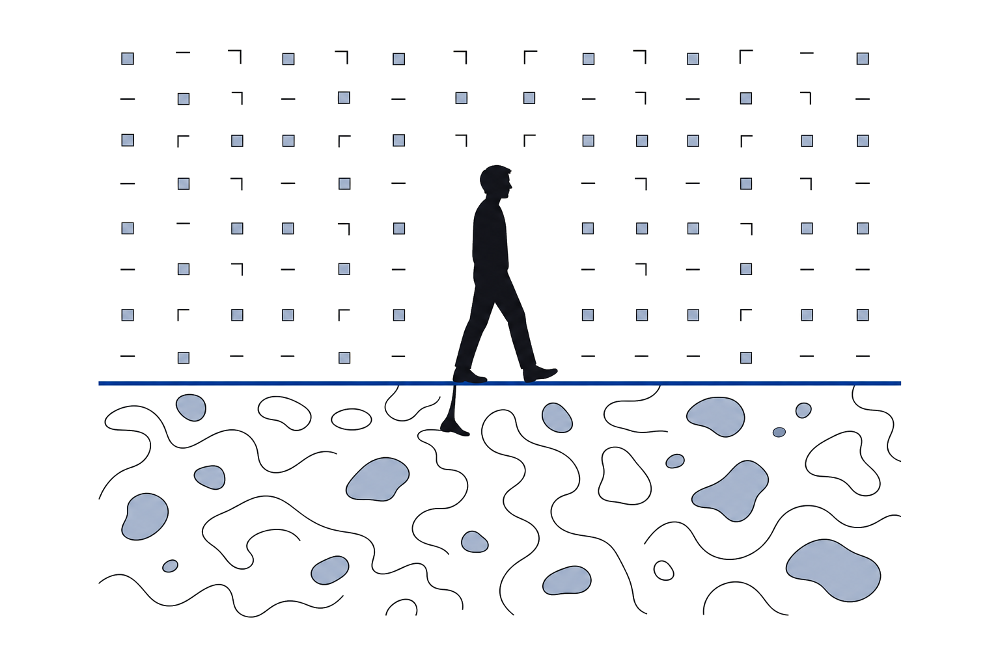
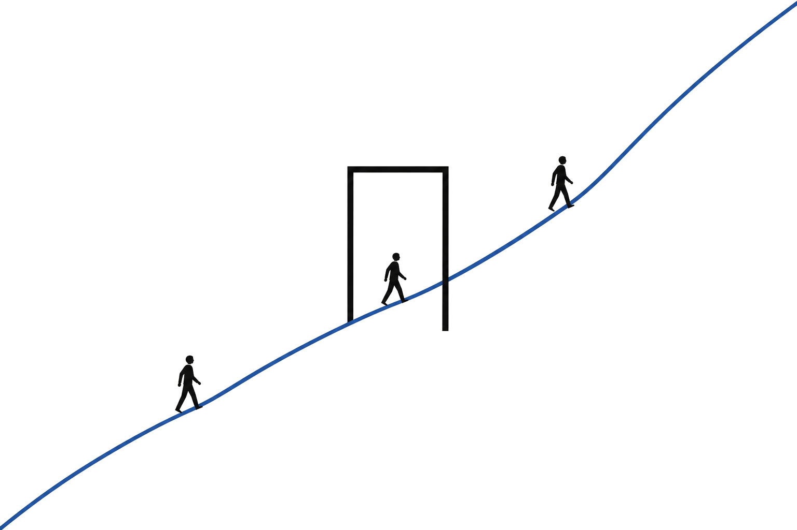
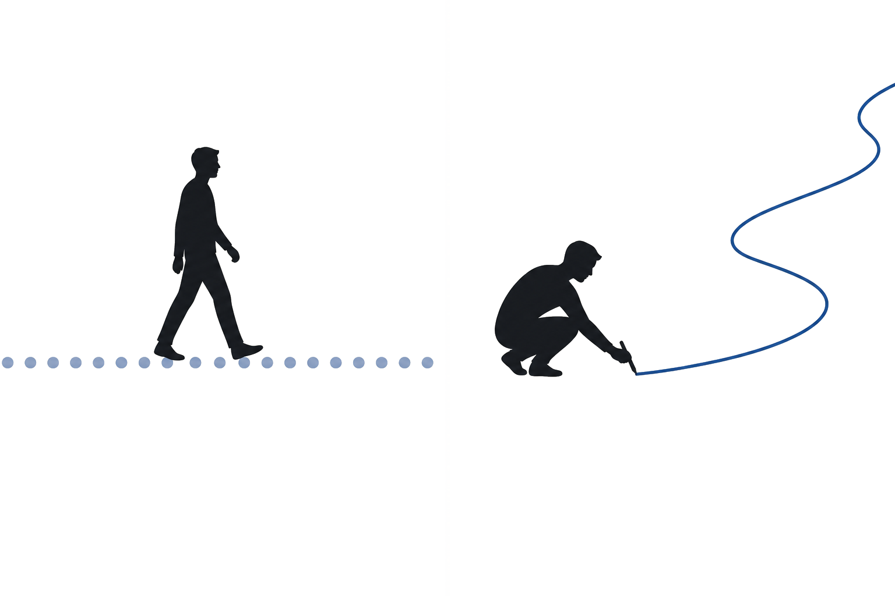
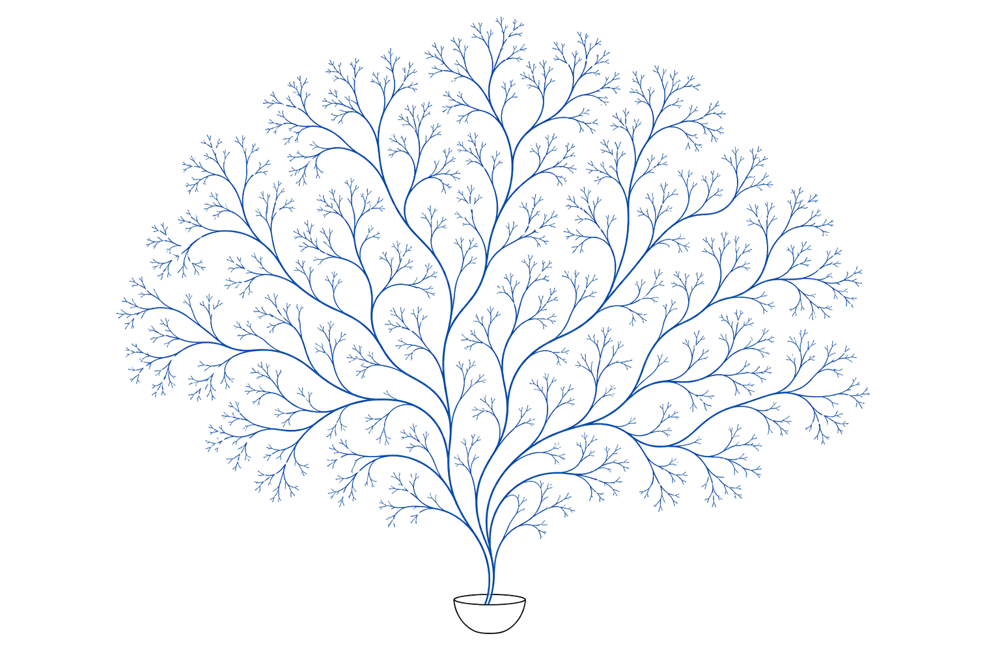
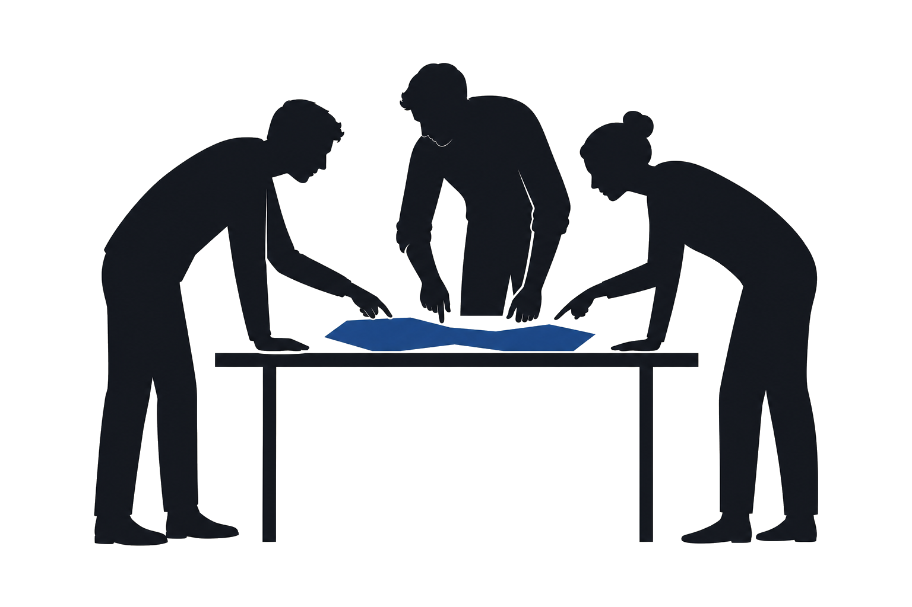

through Heutagogy and Generative AI
Tom Hagiladi · Amnon Glassner
Crossing Boundaries and Disciplines
Levinsky‑Wingate Academic College · Tel Aviv
7 October 2026
A short authentic experience in initiating and deciding what and how to learn, and how to share and evaluate emerging knowledge.
Boundaries are
not only between
disciplines.

Cultures, regions, professions, and communities.
Ways of learning: observing, questioning, experiencing, dialoguing, reflecting.
Modes of expression: text, image, map, story, podcast, video.

The workshop invites
movement across
content, method,
perspective, and media.
Participants are not only
receivers of content.
They become designers
of a short learning journey.

Hagiladi & Glassner, 2026
Learners decide what to learn, how, from what, and how to represent.
GenAI expands questions, perspectives, connections, synthesis, analysis, representation and evaluation of knowledge.
The learning companion reveals curiosity and aids thinking and reflection.
A boundary‑crossing question, topic or issue.
Resources, and manage a dialogue with GenAI.
Connect disciplines, cultures and perspectives.
Insights, and a curiosity spark.
Time principle — keep the inquiry small enough to complete, but rich enough to cross a boundary.
Keep the inquiry
small enough
to complete,
but rich enough
to cross a boundary.

Work in pairs or triads.
Your goal is to experience a short heutagogical learning, not to produce a perfect answer.
Take one shared question, or individual subtopics connected to one theme.

Create and word a question, issue or broad topic that crosses disciplinary, cultural, professional or regional boundaries.
Decide what to learn, how to learn it, and which resources or experiences to use.
To generate questions, surface possibilities, challenge assumptions, offer perspectives and connect ideas.
What and how to share something you learned, in order to arouse curiosity in others to keep learning about it.
What could be interesting to learn about this topic?
Which unexpected disciplines or perspectives can be connected here? Different times, professions, senses, macro and micro, what‑if, defamiliarization.
What assumptions in our thinking and knowledge constructing should be questioned?
Scaffolds, not requirements
Share in 2 minutes
From what you learned, or from the process itself.
To your discipline, your work, or your own life.
That may spark curiosity in others.
Everything you need
is in the app.
Scan the code, or type the address.
tomhagiladi.github.io/crossing‑boundaries‑2026
Questions afterwards
amnonglassner55@gmail.com